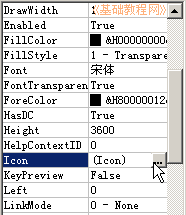
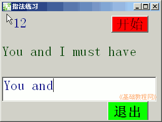

2011-2012 第一学期九年级 VB 教学课程设计
作者：TeliuTe 来源：基础教程网
十一、学会添加图标 返回目录 下一课学习目标：学会给程序设置一个图标；
注意事项：先准备好图标；
1、绘制控件(或者打开上一课的文件)
1）打开一个标准EXE，绘制两个标签，一个文本框，
Label1的Caption属性改为“输入：”，另一个标签改为“You and I must have”
2）设置好控件的字体和颜色；
3）进入代码窗口，点击对象下拉列表，依次选择“通用、Text1、Timer1”，在出来的代码段中分别输入；
4）保存为“第十一课”，点菜单“运行－启动”，测试程序成功；
5）回到对象窗口，选中窗体Form1，在属性里设置 Icon 选择一个图标文件

6）保存，运行，应该出来一个带图标的；

课后记 2011-11-18 19:32：
感觉上完累的，学生也浮躁了有些开始本节学习了的基础知识，如果你成功地完成了练习，请继续学习下一课内容；
本教程由86团学校TeliuTe制作|著作权所有
基础教程网：http://teliute.org/
美丽的校园……
转载和引用本站内容，请保留版权信息和本站链接。